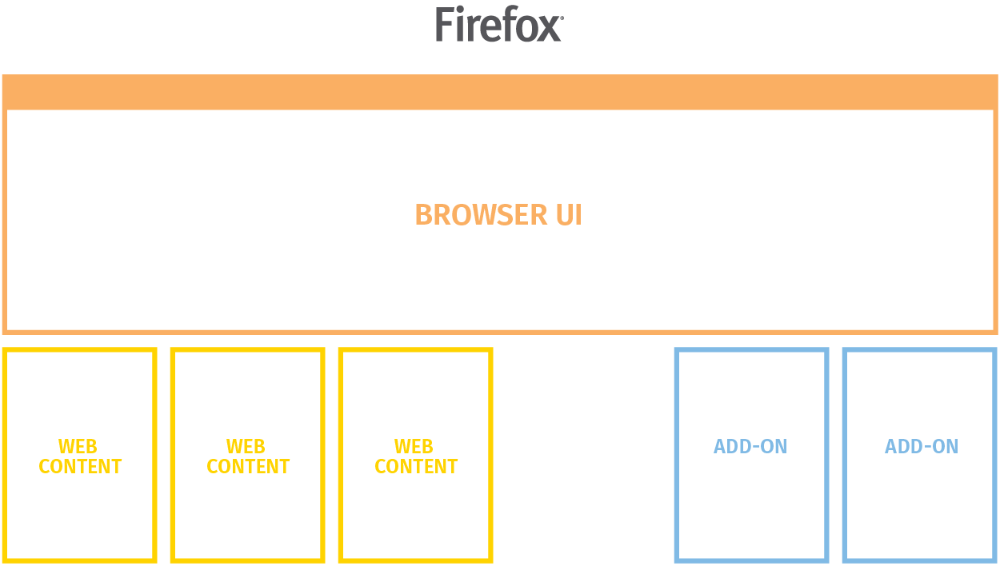

Firefox - novinky příští rok
Michal Stanke
<mstanke@mozilla.cz>
,
@MozillaCZ
,
LinuxDays 2016, Praha
Firefox
Firefox a kvalita
✝ Hello, Social API, Panorama, Firefox OS
systémové doplňky
podpora starých systémů (XP, Vista)
zásuvné moduly (NPAPI)
64 bitů jako výchozí i pro Windows
Electrolysis (e10s) -> Sandbox
Firefox a WebExtensions
1/3 doplňků stačí „přebalit“
nadstavba nad API Chrome
W3C standard
ne všichni implementují všechno
Budoucnost Electrolysis
letos pro pro všechny bez doplňků
příští rok pro všechny
a ještě dál

Firefox Test Pilot
experimentální funkce
doplňky -> Firefox?
pro každého
zpětná vazba
Activity Stream (Context Graph)
testpilot.firefox.com
Děkuji
Michal Stanke
@MozillaCZ
testpilot.firefox.com
Prezentace
:
bit.ly/2dvMkLS